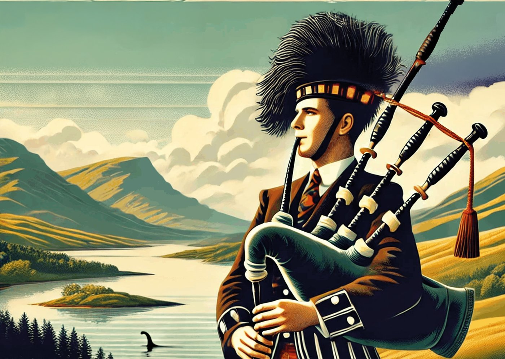
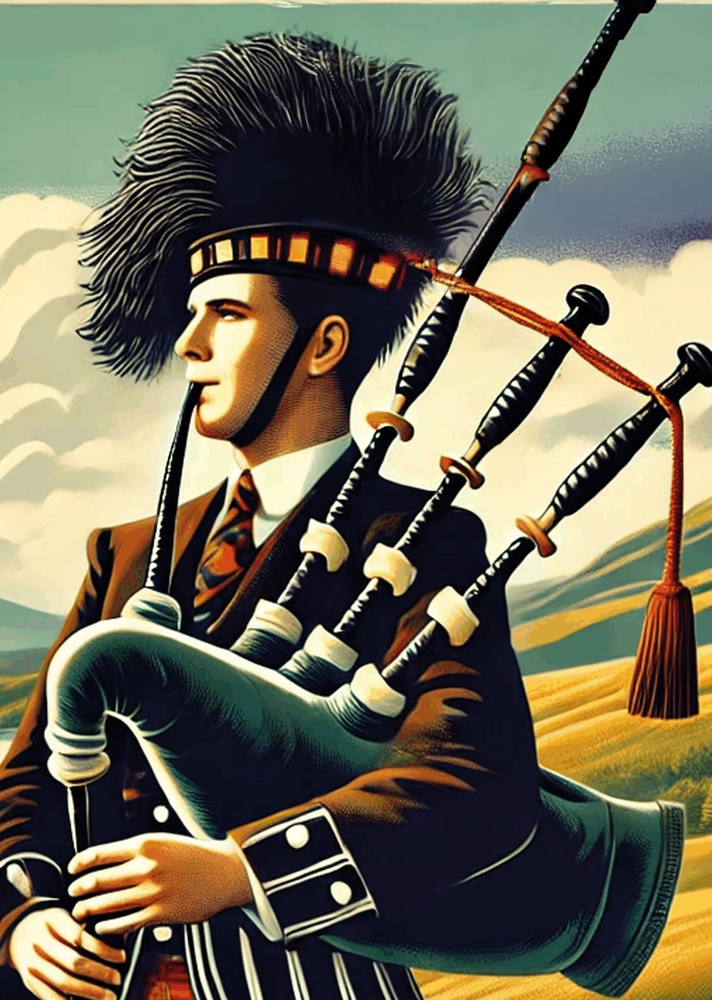
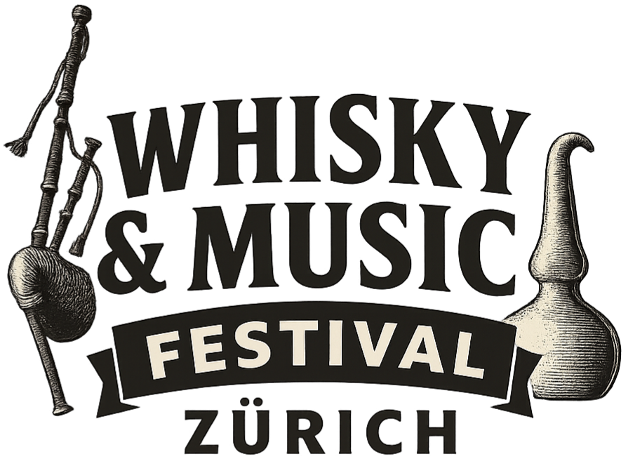
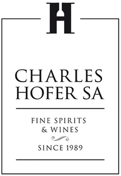
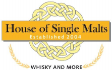
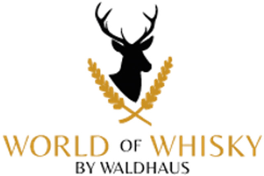
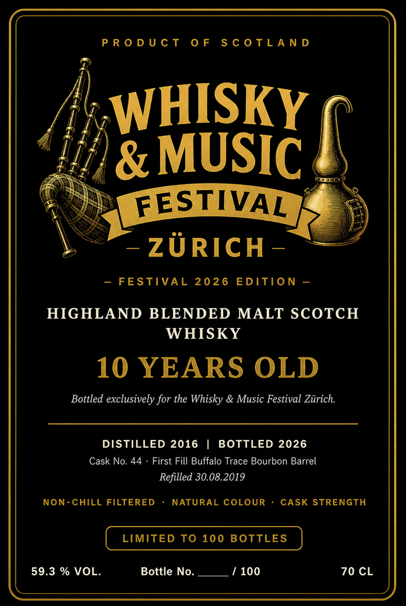

Duty-free whisky shop with over 670 bottlings, 8 kilometres from Samnaun – and long-time host of legendary tastings by Lake Zürich.
35+
Exhibitors from all over Switzerland



Whisky & Music Festival 2026
Advance sale via Eventfrog · Discounted for kilt wearers CHF 18.- (box office)
Exhibitors
From international rarities to Swiss whisky specialities — extraordinary bottlings and exciting discoveries.
Duty-free whisky shop with over 670 bottlings, 8 kilometres from Samnaun – and long-time host of legendary tastings by Lake Zürich.

For almost 35 years, our brands have been our hallmark — from GlenAllachie to Arran to Tomatin.
For over 30 years, searching the world for rare spirits — around 3,000 premium bottlings in the range.

The latest bottlings from independent bottler Meadowside Blending and the Irish Lough Gill distillery.
Third-generation independent merchant with around 2,000 whiskies from around the world.

The institution of the Swiss whisky scene — exclusively at the festival, with Redbreast, The Macallan and Glenfiddich among others.
Programme
Friday 4–10pm, Saturday 2–10pm — concerts until 11pm.
Start of the Whisky Festival — music begins at 5pm.
Scottish bagpipe opening for the fair's launch.
Irish folk meets rock and a touch of jazz — an energetic fusion sound.
To watch or join in.
Second performance of the evening.
Ballads and rousing concert moments.
Start of the Whisky Festival — music begins at 4pm.
Musical opening of the second festival day.
Traditional Celtic melodies and original compositions.
Live concert in the Musiksaal, upper foyer.
Indie Irish folk rock from Ireland — rousing original compositions and classics.
Masterclasses
Small groups, big stories — led by brand ambassadors and international whisky experts.
Tickets
Advance-sale prices apply via Eventfrog until one hour before doors open; box-office prices are higher.
Save the date: 26–27 November 2027 and 24–25 November 2028 — the Whisky & Music Festival takes place every year on the last weekend of November.
Festival Exclusive
A single cask, hand-picked — only 100 numbered bottles carry our name.

Label illustrative, not yet final — approval from Whiskybroker pending.
Cask No. 44 is ten years old and finished its maturation in a first-fill Buffalo Trace bourbon barrel, before we bottled it at cask strength — unfiltered, uncoloured, undiluted. Only 100 numbered bottles carry the festival logo, available exclusively at our stand during the festival while stocks last.
Location
Right at Stauffacher — easily reached by tram and bus.